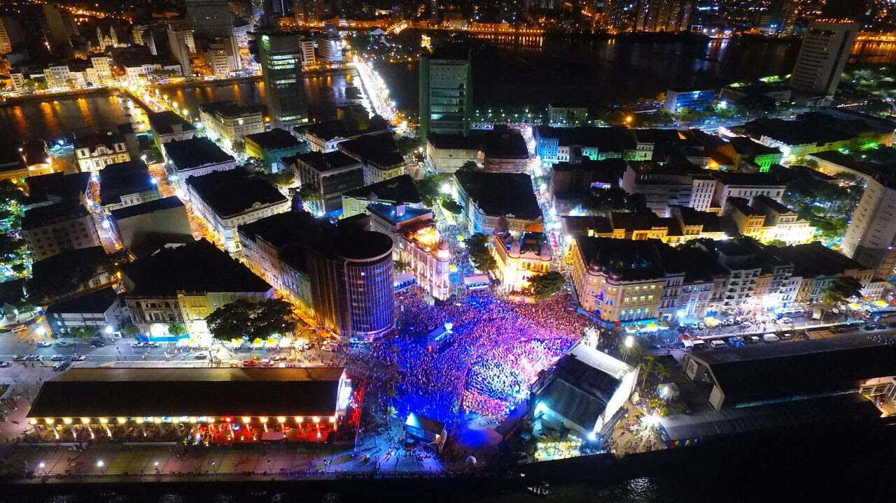
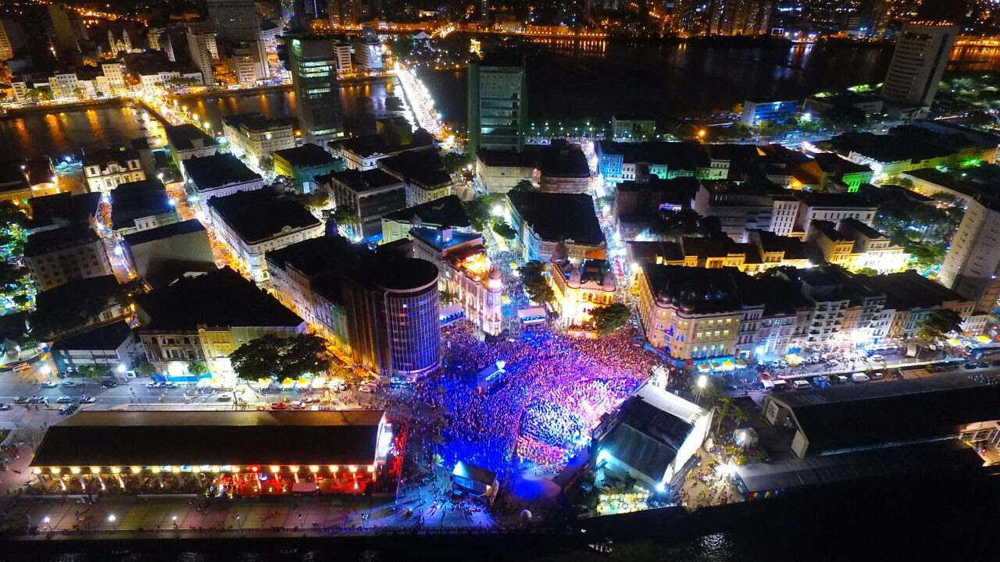

Saiba mais sobre essa cidade que coincilia história, cultura, artesanato, festas e muito mais!!!
Site produzido para atividade do curso de Introdução à Programação Proz Educação.
 


Site produzido para atividade do curso de Introdução à Programação Proz Educação.